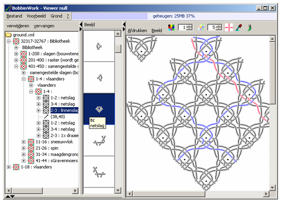

Preparations
The following screen shot is fully prepared to change the original diagram
- in the tree panel a stitch is selected which is highlighted in the diagram, this enables the delete button
- in the centre panel a stitch is the selected with the same number of threads as in the tree panel, this
enables the replace button
- the twist in the toolbar has a new colour (hover over the elements of the toolbar for hints)
- a thread is selected and highlighted (might be a challenge for some threads/stitches as the software is not
clever enough and slow, teething problems that still should be solved)

FAQ
- Do I see it right: the diagrams intend to show you the way of the single threads? Not the kind of diagrams,
that use a special color code for the different kind of stitches (green for half stitch, red for cloth an
twist, purple for clothstitch, blue for braid)?
yes, go to the view menu at the top of a panel and you can choose the other type of diagram